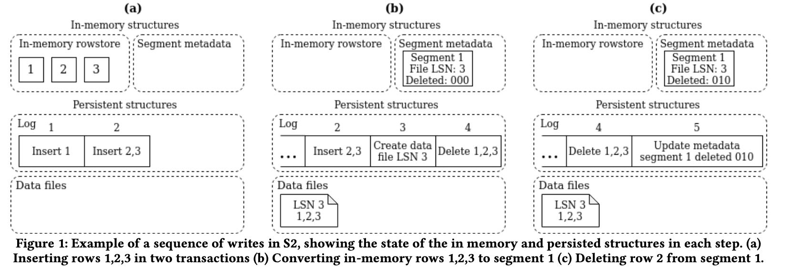
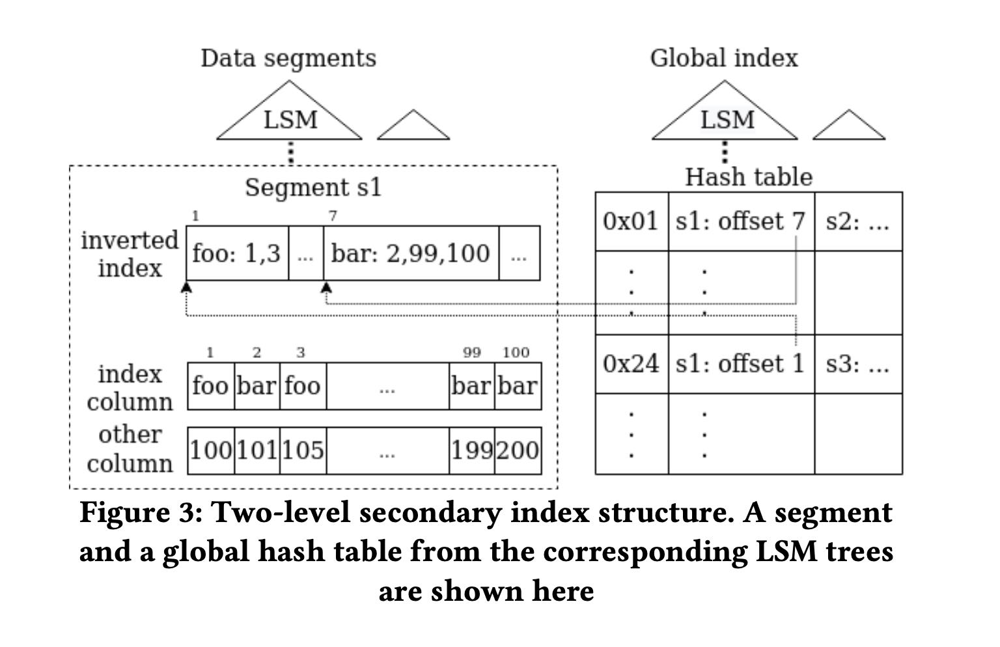

Cloud-Native Transactions and Analytics in SingleStore
Table of Contents
Cloud-Native Transactions and Analytics in SingleStore https://dl.acm.org/doi/pdf/10.1145/3514221.3526055
这篇文章讲的是SingleStore(MemSQL)怎么在存算分离的环境上实现HTAP系统的，我印象比较深刻的就是事务在本地磁盘提交+replica就算完成提交而不用写入cloud storage来提高TPS，增加了二级索引来提高点查的效率，内存写入用rowstore+磁盘写入用columnstore。技术细节比较多，我没有办法完全把这些细节全部串联起来。
1. abstract
几个特点：
- 存算分离能力
- 分布式能力 100节点，1000cores, 10s TBs内存
- 可以同时运行TP/AP workloads
- 存储上是rowstore + columnstore. 最新数据按照行存，刷下去使用列存。
- 向量化执行引擎
In this paper we introduce SinglestoreDB (S2DB), formerly called MemSQL, a distributed general-purpose SQL database designed to have the versatility to run both operational and analytical workloads with good performance. It was one of the earliest distributed HTAP databases on the market. It can scale out to efficiently utilize 100s of hosts, 1000s of cores and 10s of TBs of RAM while still providing a user experience similar to a single- host SQL database such as Oracle or SQL Server. S2DB’s unified table storage runs both transactional and analytical workloads efficiently with operations like fast scans, seeks, filters, aggregations, and updates. This is accomplished through a combination of rowstore, columnstore and vectorization techniques, ability to seek efficiently into a columnstore using secondary indexes, and using in-memory rowstore buffers for recently modified data. It avoids design simplifications (i.e., only supporting batch loading, or limiting the query surface area to particular patterns of queries) that sacrifice the ability to run a broad set of workloads.
2. introduction
数据库趋势：存算分离 + 适应多种workloads. 一套系统可以减少同时减少管理和使用成本，业务和分析数据不用拆分。
We believe two industry trends have driven this proliferation of new databases. The first trend is the shift to cloud-native architectures designed to take advantage of elastic cloud infrastructure. Cloud blob stores (S3 [3]) and block storage (EBS [44]) allow databases to tap into almost limitless, highly- available and durable data storage. Elastic compute instances (EC2 [4]) allow databases to bring more compute to bear at a moment’s notice to deal with a complex query or a spike in throughput. The second trend is the demand from developers to store more data and access it with lower latency and with higher throughput. Modern applications generate a lot of data. This performance and data capacity requirement is often combined with a desire for flexible data access. These access patterns are application-specific but can range from low-latency, high- throughput writes (including updates) for real-time data loading and deduplication, to efficient batch loading and complex analytical queries over the same data. Application developers have never been more demanding of databases.
S2DB 将数据提交到本地就完成事务提交，之后本地数据会异步写入到cloud storage上。
S2DB is able to make efficient use of the cloud storage hierarchy (local memory, local disks, and blob storage) based on data hotness. This is an obvious design, yet most cloud data warehouses that support using blob storage as a shared remote disk don’t do it for newly written data. They force new data for a write transaction to be written out to blob storage before that transaction can be considered committed or durable [26, 27, 30]. This in effect forces hot data to be written to the blobstore harming write latency. S2DB can commit on local disk and push data asynchronously to blob storage.
S2DB 使用统一的表存储格式，可以同时满足TP+AP需求：行存+列存+二级索引
S2DB’s unified table storage internally makes use of both rowstore and columnstore formats, but end users need not be aware of this. At a high level, the design is that of a columnstore with modifications to better support selective reads and writes in a manner that has very little impact on the columnstore’s compression and table scan performance. The columnstore data is organized as a log-structured merge tree (LSM) [8], with secondary hash indexes supported to speed up OLTP workloads. Unified tables support sort keys, secondary keys, shard keys, unique keys and row-level locking, which is an extensive and unique set of features for table storage in columnstore format. Unified table storage is also sometimes referred to as universal storage [39] for its ability to handle a universal set of workloads.
3. background
这节提到了许多S2DB的技术架构：
- 分为agg nodes + leaf nodes. 可以认为分别就是计算和存储节点。
- 数据存储上按照partitions做切分，同时这个partitions也是replica单元。
- 使用LLVM 解释+编译 混合来执行代码，编译是异步完成的。
- agg nodes会选择一个coord node来做主节点，主节点负责partition replica HA. 估计也负责查询和写入入口。
- 存储上使用 in-memory rowstore(lockfree skiplist) + disk-based columnstore.
关于rowstore：
- skiplist 里面保存 row的多个版本，每个版本的row都使用固定大小的struct表示
- 写入row之前会先写log. 这个log并不是写在cloud storage而不是本地磁盘的（看上去好像也没有同步过去）
关于columnstore:
- 按照segments进行切分，每个segment之间数据是没有交集的
- segment metadata会保存在内存中，方便进行快速过滤
- 在segment metadata里面还存放了delete vector表示哪些行需要删除掉
- column encoding 在设计上要让seek impl高效，不然没有办法点查。
4. separation of storage and compute
你可以认为本质上S2DB还是按照non cloud native的方式在做数据库，只不过将cloud storage作为durability tools而不是availability tools来使用。HA是通过本地磁盘来解决replica，而不是通过cloud storage来解决的，这也是为什么它有比较高的TPS。
S2DB can run with and without access to a blob store for separated storage. When running without access to blob storage, S2DB behaves like a typical shared-nothing distributed database, where the nodes in the cluster are the source of truth. When running with a blob store, S2DB is atypical in that it doesn’t store all persistent data on the blob store and only transient data on local storage. Instead, newly written data is only persisted on the local storage of the cluster and later moved to the blob store asynchronously. This design allows S2DB to commit transactions without the latency penalty of needing to write all the transaction data to blob storage to make it durable. By treating blob storage truly as cold storage, S2DB is able to support low-latency writes while still getting many of the benefits of separated storage (faster provisioning and scaling, storing datasets bigger than local disk, cheaper historical storage for point in time restores etc.). So in order to describe how S2DB separates storage, it’s important to understand how S2DB’s local or integrated durability and compute functions, as that local durability mechanism works in tandem with blob storage to maintain durability of committed transactions.
数据写入过程大概是下图所示
- 数据先写入mem rowstore 并且写log
- 积累到一定数量之后按照column store写入到磁盘segment文件
- 注意memory里面还维护了segment metadata, 里面还有delete vector
- 删除记录修改segment metadata 并且写log

数据从local到remote storage过程如下图：
- Transactions are committed to the tail of the log and replicated to other nodes just as when S2DB runs without blob storage available. Since the tail of the log is stored on the local disk and memory of the leaf nodes, no blob store writes are required to commit a transaction
- Newly committed columnstore data files are uploaded asynchronously to blob storage as quickly as possible after being committed. Hot data files are kept in a cache locally on disk for use by queries and cold data files are removed from local disk once uploaded.
- Transaction logs are uploaded to blob storage in chunks below a position in the log known to contain only fully durable and replicated data. The tail of the log newer than this position is still receiving active writes, thus these newer log pages are never uploaded to blob storage until replication advances the fully durable and replicated log position past them.
- Snapshots of rowstore data are taken only on master partitions and written directly to the blob store reducing local disk IO compared to S2DB running without blob storage. Replicas don’t need to take their own snapshots. If a replica ever needs a snapshot (say because it was disconnected for a long period of time), it can get the snapshot from blob storage.
- To add more compute to the cluster, new replica databases get the snapshots and logs they need from blob storage and replicate the tail of the log (not yet in blob storage) from the master databases. Columnstore data files are pulled from the blob store on demand and stored in the data file cache as needed. This design allows new replicas to be provisioned quickly, as they don’t need to download all data files before they can start acknowledging transactions or servicing read queries. This fast provisioning process allows pools of compute called workspaces to be created over the same set of databases as shown in Figure 2.
数据写到local disk就直接ack也会存在复杂性，但是使用cloud storage的延迟的确不可接受。amazon aurora其实也不是使用S3来做中间存储的，而是使用使用定制的storage service来做中间存储的.
On the other hand, persisting to local disk and then moving the data to blob storage asynchronously does have some drawbacks compared to keeping all persistent data in the blob store. Our approach is more complex as keeping persistent state on local disk/memory requires a local high performance replication and recovery protocol. It’s also less elastic. Adding or removing hosts requires moving the local data not yet in blob storage carefully to maintain durability and availability guarantees. In the event of multiple concurrent failures, for instance loss of all nodes which have a copy of a single partition, committed data could be lost. This can be mitigated by having sync replicas spread across multiple availability zones, so losing data would require concurrent failures between availability zones or the loss of an entire region.
Cloud operational databases such as Amazon Aurora [28] don’t use blob storage for system-of-record data at all, instead using their own separated storage or log services to make data durable and available. Blob storage is only used for backups. As a result, the maximum database size that Aurora can support is limited by what its storage service can support, currently 128 TB (it’s not unlimited). It also means the expense associated with storing and accessing data is higher (Aurora storage is about 4 times as expensive as S3).This trade-off makes sense for a database targeting OTLP workloads, as the data sizes they deal with are typically smaller and prioritizing efficient availability and durability features is more important for OLTP.
5. unified table storage
本质上S2DB采用的还是columnstore，在这个基础上来适应TP workloads. rowstore在前面接住insert(直接插入), delete(使用delete vector), update(这个不知道如何实现的，不知道是重写列还是重写行，大概率是重写行，然后产生新的segment file)
Similar to common LSM tree implementations, S2DB columnstore storage performs streaming inserts on an in-memory write- optimized store to achieve low latency writes. Different from other LSM trees, for update and delete operations S2DB needs to modify the segment metadata in addition to the in-memory store, due to the design decision to avoid tombstone records. While update and delete operations still minimize disk writes, extra care (section 4.2) is required to avoid blocking from concurrent modifications on the same segment.
为了加快点查使用了二级索引，这个二级索引在每个segment file有一个，然后在全局有一个。二级索引其实是一个倒排索引(inverted index，根据column value做一个row id list. 全局索引则是根据column value产生(segment file id, segmemtn file inverted index offset)指向每个segment file的倒排索引位置。
Differing from the common approaches, S2DB secondary indexes use a two-level structure integrated with the LSM tree storage, as illustrated in figure 3.
- For each segment, an inverted index is built to map values of the indexed column to a postings list, which stores row offsets in the segment with that value.
- Across segments in the table, a global index is used to map values of the indexed column to the ids of the segments with that value, along with the starting location of the corresponding postings list in the inverted index for each segment.

目前global index本质上是一个unordered secondary indxes. 按照lsm tree结构组织起来。每个segment file生成的时候都会产生一个hash table. 然后后面定期将这些hash table进行merge. global index只需要维护segment的索引就行，rowstore上的操作其实是不用管的，当有segment file删除的时候global index使用懒标记删除的方法在merge阶段去掉。
这里还提到了global index的key可以只存储hash value而不是column value这样可以减少merge write amp. 但是我没有搞清楚如果出现hash冲突怎么办？下面其实还是需要依靠segment file inverted index来做check的
The global index can be implemented with different data structures to support different index types. Currently S2DB supports unordered secondary indexes, where the global index uses a special LSM tree storing an immutable hash table at each level. When a segment is created, a corresponding hash table gets created for the secondary index, covering values from the segment. Over time, the hash tables for different segments get merged together using the LSM tree merging algorithm, creating larger hash tables covering multiple segments. Segment deletions are handled lazily in the global index – reads simply skip the references to deleted segments in the global hash tables, and the LSM tree merging process later rewrites the hash table if at least half of the segments it covers are deleted. Lazy segment deletion allows the index maintenance to happen independently from the data segments, so that secondary indexes won’t become a point of contention on writes. In the future, we plan to support ordered secondary indexes by using a regular ordered LSM tree as the global index structure.
对于多列secondary index. global index实现方式是key使用column value(a, b, c) (同样论文里面提到了存储的hash value, 但是我搞不懂如果冲突时候的问题)，value则是(a, b, c)在segment file中倒排起始的位置，其实就是多个拉链表的起始地址。在进行读取的时候进合并。
这种实现方式还可以满足unique enforcement检查。
Using the secondary index structure described above, S2DB columnstore supports uniqueness constraint enforcement without forcing the sort key to be the unique key columns or duplicating the data. The idea is simple - each newly inserted row checks the secondary index for duplicates before inserting into the table. As an optimization, each batch of ingested rows is checked together to amortize the metadata access cost of the global indexes. The following procedure is used
- Take locks on the unique key values for each row in the batch. An in-memory lock manager is used here to avoid concurrent inserts of the same unique key value
- Perform secondary index lookups on the unique key values.
- When there are duplicated values, depending on the user- specified unique-key handling option, either report an error (default), skip the new row (SKIP DUPLICATE KEY ERRORS option), delete and then replace the conflicting rows (REPLACE command), or update the conflicting rows (ON DUPLICATE KEY UPDATE option).
row-level locking这节有点没有看懂，好像是row update/delete的时候可以将row从segment file挪动到rowstore上，然后在内存上进行修改和事务提交。可能delete不需要这么做吧，直接做个delete vector标记就好，至于update可能是修改部分数据，那么需要将row重新拿回到rowstore中。
6. adaptive query execution
因为有了secondary index所以在scan filtering方便就多了选择，考虑是否使用倒排索引做。写到这里我突然想到，其实starrocks bitmap index也就是倒排索引，而且感觉使用bitmap index在merge等方面会更加高效。唯一缺少的是全局倒排索引。
文章总结了4中filtering方法：
- regular filter. 按照列顺序进行过滤
- encoded filter. 比如字典编码直接在字典值上做过滤
- group filter. 这个是对所有列做过滤然后产生selected bit
- secondary index filter. 用倒排索引搞
选择filtering策略就是看最前面一批batch使用什么方式。里面提到 "Costing is skipped if the filter condition is a conjunction with a selective index filter" 不知道这个是什么意思。总之就是可以针对每个列，选择出一个filter方法出来，并且记录这种选择方法的代价C.
To select the optimal evaluation strategy, S2DB costs each different method of filter evaluation by timing it on a small batch of data at the beginning of each segment. Doing the costing per- segment ensures that the cost is aware of the data encoding and the data correlation with the sort key. For filters using an index, costing is done using the postings list size stored in the index, since there’s no per-row evaluation cost beyond reading the postings list. Costing is skipped if the filter condition is a conjunction with a selective index filter, since costing in this case would be more expensive than running the filters on rows output by the index.
然后可以在这个基础上reorder filters. 用不等式 \((1-P(X))/Cost(X)\) 将过滤效果更高但是成本更低的filter放在前面。